I. LOGIK UND MENGENLEHRE
A. Definition logischer Operatoren
B. Eigenschaften logischer Operatoren
C. Mengen und Mengenoperatoren
D. Eigenschaften der Mengenoperatoren
E. Mächtigkeit und Produktmenge
 Ergänzungen und Details
Ergänzungen und DetailsEin Operator ist ein elementarer Rechenmechanismus, der auf mathematische Objekte – Operanden genannt – angewendet wird und als Ergebnis wieder ein mathematisches Objekt liefert. Unäre Operatoren haben einen Operanden, binäre Operatoren zwei usw.
Die einfachsten mathematischen Objekte sind die Wahrheitswerte "wahr" und "falsch" (abgekürzt als 1 und 0). Logische Operatoren sind solche, die auf Wahrheitswerte angewendet werden und einen solchen ergeben. Über Wahrheitstafeln, die alle Möglichkeiten durchgehen, die Operanden mit Werten zu belegen, können wir logische Operatoren definieren und ihre Eigenschaften nachweisen.
• Der NICHT-Operator (Negation) dreht den Wahrheitswert um.
| a | a | (Andere Schreibweise: ¬a) |
| 0 | 1 | |
| 1 | 0 |
• Der UND-Operator (Konjunktion) ergibt wahr, wenn alle Operanden wahr sind, und sonst falsch.
| a | b | a ∧ b | (Merkhilfe: ∧ wie AND) |
| 0 | 0 | 0 | |
| 0 | 1 | 0 | |
| 1 | 0 | 0 | |
| 1 | 1 | 1 |
• Der ODER-Operator (Disjunktion) ergibt wahr, wenn mindestens ein Operand wahr ist, und sonst falsch.
| a | b | a ∨ b |
| 0 | 0 | 0 |
| 0 | 1 | 1 |
| 1 | 0 | 1 |
| 1 | 1 | 1 |
2 Geschachtelte Operationen
Operationen können geschachtelt werden, indem wir an einer Stelle, wo eine 0 oder 1 als Operand erwartet wird, auch eine geklammerte Operation zulassen. Das bedeutet dann, dass das Ergebnis der geklammerten Operation der eigentliche Operand ist:
(0 ∨ 1) ∧ 0 = 1 ∧ 0 = …
Aufgabe 1: Berechne über die Operatordefinitionen, ohne Schritte zu überspringen:
a) 1 ∧ (0 ∨ 0) = b) (0 ∧ 1) ∧ (1 ∧ 0 ∨ 0) = c) 0 ∨ 1 ∨ (1 ∧ 1 ∨ 0) =
a) 1 ∧ (0 ∨ 0) = b) (0 ∧ 1) ∧ (1 ∧ 0 ∨ 0) = c) 0 ∨ 1 ∨ (1 ∧ 1 ∨ 0) =
Achtung: Der NICHT-Überstrich hat Klammerfunktion, ist also erst dann auszuführen, wenn darunter nur mehr eine bloße 0 oder 1 steht!
a) 1 ∧ (0 ∨ 0) =
1 ∧ (1 ∨ 0) =
1 ∧ 1 =
1
b) (0 ∧ 1) ∧ (1 ∧ 0 ∨ 0) =
(0 ∧ 0) ∧ (0 ∨ 0) =
0 ∧ (1 ∨ 0) =
0 ∧ 1 =
0
c) 0 ∨ 1 ∨ (1 ∧ 1 ∨ 0) =
1 ∨ 1 ∨ (1 ∧ 1) =
1 ∨ (1 ∧ 0) =
0 ∨ 0 =
0
3 Bindungsvereinbarungen
Bei fehlenden Klammern gibt es Vereinbarungen darüber, welcher Operator stärker in dem Sinn ist, dass er den strittigen Operanden an sich bindet. Wir werden diese Vereinbarungen im Folgenden nicht verwenden, müssen sie aber kennen, falls wir auf Angaben mit fehlenden Klammern stoßen.
o Der unäre NICHT-Operator bindet stärker als die binären:
| ¬ a ∧ b | 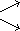 |
(¬a) ∧ b ¬(a ∧ b) 
|
o Der UND-Operator bindet stärker als der ODER-Operator:
| a ∨ b ∧ c |
(a ∨ b) ∧ c a ∨ (b ∧ c) |
o Bei gleichen Operatoren bindet der linke stärker als der rechte:
| a ∧ b ∧ c |
(a ∧ b) ∧ c a ∧ (b ∧ c)
|
Für Rechnungen, die nur 0en und 1en enthalten, reichen die Operatordefinitionen, aber zusätzliche Eigenschaften können den Rechenweg abkürzen und ermöglichen erst das "Buchstabenrechnen".
1 Assoziativgesetz
• UND und ODER sind assoziativ, d.h. wir können die Bindung ändern, ohne dass sich das Ergebnis ändert.
(a ∧ b) ∧ c = a ∧ (b ∧ c) und (a ∨ b) ∨ c = a ∨ (b ∨ c)
Beweis:
| a | b | c | a ∧ b | (a ∧ b) ∧ c | b ∧ c | a ∧ (b ∧ c) |
| 0 | 0 | 0 | 0 | 0 | 0 | 0 |
| 0 | 0 | 1 | 0 | 0 | 0 | 0 |
| 0 | 1 | 0 | 0 | 0 | 0 | 0 |
| 0 | 1 | 1 | 0 | 0 | 1 | 0 |
| 1 | 0 | 0 | 0 | 0 | 0 | 0 |
| 1 | 0 | 1 | 0 | 0 | 0 | 0 |
| 1 | 1 | 0 | 1 | 0 | 0 | 0 |
| 1 | 1 | 1 | 1 | 1 | 1 | 1 |
| a | b | c | a ∨ b | (a ∨ b) ∨ c | b ∨ c | a ∨ (b ∨ c) |
| 0 | 0 | 0 | 0 | 0 | 0 | 0 |
| 0 | 0 | 1 | 0 | 1 | 1 | 1 |
| 0 | 1 | 0 | 1 | 1 | 1 | 1 |
| 0 | 1 | 1 | 1 | 1 | 1 | 1 |
| 1 | 0 | 0 | 1 | 1 | 0 | 1 |
| 1 | 0 | 1 | 1 | 1 | 1 | 1 |
| 1 | 1 | 0 | 1 | 1 | 1 | 1 |
| 1 | 1 | 1 | 1 | 1 | 1 | 1 |
Bem: Angenommen mehrere UND bzw. mehrere ODER folgen ohne Klammern aufeinander. Zum Ersten klären die Bindungsvereinbarungen, wo die fehlenden Klammern sitzen. Zum Zweiten sagt das Assoziativgesetz, dass es im Hinblick auf das Endergebnis eine solche Klärung des Rechenwegs gar nicht braucht.
Zum Dritten könnten wir UND/ODER auch für beliebig viele Operanden definieren, was dann ohne Zwischenergebnisse zum Endergebnis führt.
2 Kommutativgesetz
• UND und ODER sind kommutativ, d.h. wir können die Operanden vertauschen, ohne dass sich das Ergebnis ändert.
a ∧ b = b ∧ a und a ∨ b = b ∨ a
Beweis:
In der Wahrheitstafel von UND bzw. ODER haben die 0-1-Zeile und die 1-0-Zeile dasselbe Ergebnis.
"Kompass"-Regel: Wenn ein Operator kommutativ plus assoziativ ist, können wir bei Schachtelungen dieses Operators die Klammern weglassen, die Operanden beliebig umordnen und neu klammern, ohne dass sich das Ergebnis ändert.
Beispiel: Zeige, dass (a ∧ b) ∧ c = (a ∧ c) ∧ b
(a ∧ b) ∧ c =
Assoziativgesetz
a ∧ (b ∧ c) =
Kommutativgesetz
a ∧ (c ∧ b) =
Assoziativgesetz
(a ∧ c) ∧ b
3 Distributivgesetz
• UND und ODER sind zueinander distributiv: Statt mit UND/ODER an die jeweils andere Operation anzuknüpfen, können wir den äußeren Operator samt Operand auf die inneren Operanden verteilen und die Zwischenergebnisse mit dem verbleibenden Operator zusammenrechnen.
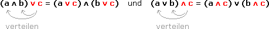
Beweis:
| a | b | c | a ∧ b | (a ∧ b) ∨ c | a ∨ c | b ∨ c | (a ∨ c) ∧ (b ∨ c) |
| 0 | 0 | 0 | 0 | 0 | 0 | 0 | 0 |
| 0 | 0 | 1 | 0 | 1 | 1 | 1 | 1 |
| 0 | 1 | 0 | 0 | 0 | 0 | 1 | 0 |
| 0 | 1 | 1 | 0 | 1 | 1 | 1 | 1 |
| 1 | 0 | 0 | 0 | 0 | 1 | 0 | 0 |
| 1 | 0 | 1 | 0 | 1 | 1 | 1 | 1 |
| 1 | 1 | 0 | 1 | 1 | 1 | 1 | 1 |
| 1 | 1 | 1 | 1 | 1 | 1 | 1 | 1 |
| a | b | c | a ∨ b | (a ∨ b) ∧ c | a ∧ c | b ∧ c | (a ∧ c) ∨ (b ∧ c) |
| 0 | 0 | 0 | 0 | 0 | 0 | 0 | 0 |
| 0 | 0 | 1 | 0 | 0 | 0 | 0 | 0 |
| 0 | 1 | 0 | 1 | 0 | 0 | 0 | 0 |
| 0 | 1 | 1 | 1 | 1 | 0 | 1 | 1 |
| 1 | 0 | 0 | 1 | 0 | 0 | 0 | 0 |
| 1 | 0 | 1 | 1 | 1 | 1 | 0 | 1 |
| 1 | 1 | 0 | 1 | 0 | 0 | 0 | 0 |
| 1 | 1 | 1 | 1 | 1 | 1 | 1 | 1 |
Bem: Das Verteilen ist nur die eine Richtung, das Distributivgesetz zu lesen. Die andere ist das Herausheben:
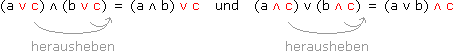
• Die Eins verhält sich beim UND neutral, die Null beim ODER, d.h. sie ergeben mit einem beliebigen Element zusammengerechnet ebendieses. Beim jeweils anderen Operator verhalten sie sich absorbierend, d.h. sie schlucken den zweiten Operanden.
Beweis:
| a | 1 ∧ a = a | 1 ∨ a = 1 |
| 0 | 1 ∧ 0 = 0 | 1 ∨ 0 = 1 |
| 1 | 1 ∧ 1 = 1 | 1 ∨ 1 = 1 |
| a | 0 ∨ a = a | 0 ∧ a = 0 |
| 0 | 0 ∨ 0 = 0 | 0 ∧ 0 = 0 |
| 1 | 0 ∨ 1 = 1 | 0 ∧ 1 = 0 |
• UND und ODER sind idempotent, d.h. gleiche Elemente ergeben zusammengerechnet wieder dieses Element. Ein Element und seine Verneinung sind zueinander "kreuzweise" invers, d.h. sie ergeben zusammengerechnet das neutrale Element des jeweils anderen Operators.
Beweis:
| a | a ∧ a = a | a ∨ a = a |
| 0 | 0 ∧ 0 = 0 | 0 ∨ 0 = 0 |
| 1 | 1 ∧ 1 = 1 | 1 ∨ 1 = 1 |
| a | a | a ∧ a = 0 | a ∨ a = 1 |
| 0 | 1 | 0 ∧ 1 = 0 | 0 ∨ 1 = 1 |
| 1 | 0 | 1 ∧ 0 = 0 | 1 ∨ 0 = 1 |
5 Buchstabenrechnen
Aufgabe 2: Vereinfache über die Operatoreigenschaften, ohne Schritte zu überspringen:
a) (a ∧ b) ∧ a = b) (a ∨ b) ∧ (a ∨ b) = c) (a ∧ b) ∨ (b ∧ b) =
a) (a ∧ b) ∧ a = b) (a ∨ b) ∧ (a ∨ b) = c) (a ∧ b) ∨ (b ∧ b) =
a) (a ∧ b) ∧ a =
Kommutativgesetz
(b ∧ a) ∧ a =
Assoziativgesetz
b ∧ (a ∧ a) =
Inverse Elemente
b ∧ 0 =
0 bei UND absorbierend
0
b) (a ∨ b) ∧ (a ∨ b) =
Distributivgesetz (herausheben)
(a ∧ a) ∨ b =
Inverse Elemente
0 ∨ b =
0 bei ODER neutral
b
c) (a ∧ b) ∨ (b ∧ b) =
Idempotenz
(a ∧ b) ∨ b =
Distributivgesetz (verteilen)
(a ∨ b) ∧ (b ∨ b) =
Inverse Elemente
a ∨ b ∧ 1 =
1 bei UND neutral
a ∨ b
Das obige Einkringeln bedeutet, dass wir abstrahieren und einen Klammerausdruck als "ein Ding" ansehen. So können wir die Anwendbarkeit eines Gesetzes auch dann erkennen, wenn nicht nur Ein-Zeichen-Operanden vorliegen:
Aufgabe 3: Forme so um, dass zuerst die UND und dann die ODER kommen ("disjunktive Normalform"):
(a ∨ b) ∧ (c ∨ d) =
(a ∨ b) ∧ (c ∨ d) =
(a ∨ b) ∧ c ∨ d =
Distributivgesetz (verteilen)
[a ∧ (c ∨ d)] ∨ [b ∧ (c ∨ d)] =
Distributivgesetz (verteilen)
[(a ∧ c) ∨ (a ∧ d)] ∨ [(b ∧ c) ∨ (b ∧ d)]
Das können wir uns als verallgemeinertes Distributivgesetz merken: Jeder Operand aus der ersten Klammer wird mit jedem Operanden der zweiten Klammer mit dem äußeren Operator zusammengerechnet und dann alle Zwischenergebnisse mit dem verbleibenden Operator.
Eine Menge A wird durch eine Regel charakterisiert, die für jedes Objekt x sagt, ob es zur Menge gehört oder nicht:
A = { x | x erfüllt Regel }
Wenn x die angegebene Regel erfüllt, sprechen wir von einem Element der Menge und schreiben x
 A, andernfalls x A. Zwei Mengen sind gleich, wenn ihre Regeln für jedes Objekt dasselbe sagen (soll heißen, wenn sie die gleichen Elemente haben).
A, andernfalls x A. Zwei Mengen sind gleich, wenn ihre Regeln für jedes Objekt dasselbe sagen (soll heißen, wenn sie die gleichen Elemente haben).Eine aufzählende Regel wie
A = { x | (x=1) ∨ (x=2) ∨ (x=3) }
kürzen wir so ab:
A = { 1, 2, 3 }
2 Teilmenge
• Eine Menge A heißt Teilmenge einer Menge B, kurz A B, wenn jedes Element von A auch Element von B ist. Wenn B neben den Elementen von A noch andere enthält und wir das betonen wollen, nennen wir A eine echte Teilmenge von B.
Aufgabe 4: In welchen Fällen trifft A B zu, wenn A, B die Mengen der Flächenpartikel sind, die innerhalb der folgenden Kreise liegen?
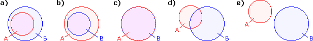
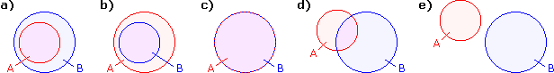
a) A B b) A B
c) A B
d) A B
e) A B • Die leere Menge ∅ ist die Menge ohne Elemente. Sie ist Teilmenge jeder anderen Menge. Das Gegenstück dazu ist eine Grundmenge G, das ist ein "Rahmen", innerhalb dessen sich die betrachteten Mengen bewegen.
3 Mengenoperatoren
• Komplement A := { x G | x A }
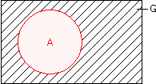
• Durchschnitt A B := { x | (x A) ∧ (x B) }
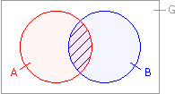
• Vereinigung A B := { x | (x A) ∨ (x B) }
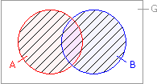
• Differenz A\B := { x | (x A) ∧ (x B) }
"ohne"
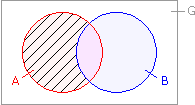
Bem: Komplemente sind nur spezielle Differenzen, nämlich solche zur Grundmenge.
A = G\A
Umgekehrt lassen sich innerhalb einer Grundmenge Differenzen durch Komplement und Durchschnitt ausdrücken.
A\B = A B
Aufgabe 5: A = {4, 5, 6}, B = {2, 4, 6, 8}, C = {2, 3, 5, 7}
a) A B = b) A C = c) C\(A B) =
a) A B = b) A C = c) C\(A B) =
a) A B = { 4, 6 }
b) A C = { 2, 3, 4, 5, 6, 7 }
c) C\(A B) = C\{ 2, 4, 5, 6, 8 } = { 3, 7 }
Hinsichtlich ihrer Eigenschaften entsprechen die Mengenoperatoren den logischen Operatoren wie folgt:
KOMPLEMENT ≙ NICHT
DURCHSCHNITT ≙ UND
VEREINIGUNG ≙ ODER
GRUNDMENGE G ≙ 1
LEERE MENGE ∅ ≙ 0
Diese Rechenstruktur, losgelöst von einer konkreten Bedeutung der Operatoren/Operanden, heißt boolesche Algebra.
Aufgabe 6: Beweise über die Regeln der booleschen Algebra (ohne auf die konkrete Bedeutung der Operatoren/Operanden zurückzugreifen):
a) A (A B) = A und b) A (A B) = A (Absorptionsgesetz)
a) A (A B) = A und b) A (A B) = A (Absorptionsgesetz)
a) A (A B) =
G bei DURCHSCHNITT neutral
(A G) (A B) =
Distributivgesetz (herausheben)
A (G B) =
G bei VEREINIGUNG absorbierend
A G =
G bei DURCHSCHNITT neutral
A
b) A (A B) =
∅ bei VEREINIGUNG neutral
(A ∅) (A B) =
Distributivgesetz (herausheben)
A (∅ B) =
∅ bei DURCHSCHNITT absorbierend
A ∅ =
∅ bei VEREINIGUNG neutral
A
Bem: Eigentlich könnten wir uns jede "Buchstabenrechnung" als eigenes Gesetz merken, es geht aber um die richtige Balance zwischen Merk- und Rechenaufwand.
2 Venn-Diagramme
Venn-Diagramme, wie wir sie oben bereits verwendet haben, sind als Grafik vekleidete Wahrheitstafeln. Dabei fassen wir Flächenpartikel durch geschlossene Linien so zu Mengen zusammen, dass jede mögliche Beziehung eines Partikels zu den beteiligten Mengen durch einen bestimmten Bereich abgedeckt wird.
Aufgabe 7: Beweise über Venn-Diagramme:
a) A B = A B und b) A B = A B (De Morgan'sche Gesetz)
a) A B = A B und b) A B = A B (De Morgan'sche Gesetz)
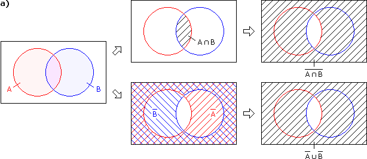
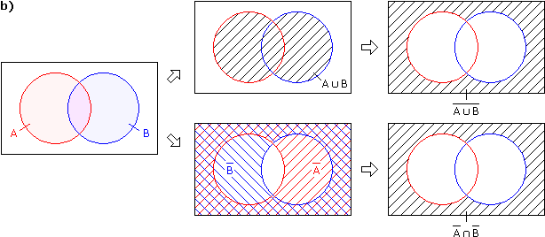
• Die Mächtigkeit einer endlichen Menge A, kurz |A|, ist die Anzahl ihrer Elemente.
Beispiel:
A = { 5, 1, 3, 5, 2 }
 |A| = 4
|A| = 4
Aufgabe 8: Eine Klasse hat 30 Schüler. Davon haben 16 braune Augen, 19 braune Haare und 11 beides gleichzeitig. Bei wie viel Schülern sind weder Augen noch Haare braun?
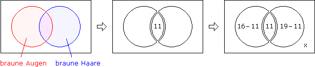
5 + 11 + 8 + x = 30
x = 62 Produktmenge
Ein 2-Tupel (x, y) ist ein neues Objekt, das den alten Objekten x und y einen "Stempel aufdrückt" (nämlich ihre Position) und sie zusammenpackt.
Bsp: (4, 5) ≙ { 41, 52 }
• Produktmenge A x B := { (x, y) | (x A) ∧ (y B) }
Die Produktmenge A x B x C besteht dementsprechend aus 3-Tupeln usw.
Aufgabe 9: A = {1, 2}, B = {2, 3, 5}, C = {, }
a) A x B = b) B x A = c) C2 = d) A x B x C =
a) A x B = b) B x A = c) C2 = d) A x B x C =
a) A x B = { (1,2), (1,3), (1,5), (2,2), (2,3), (2,5) }
b) B x A = { (2,1), (2,2), (3,1), (3,2), (5,1), (5,2) } ≠ A x B
c) C2 = C x C = { (,), (,), (,), (,) }
d) A x B x C = { (1,2,), (1,2,), (1,3,), (1,3,), (1,5,), (1,5,), (2,2,), (2,2,), (2,3,), (2,3,), (2,5,), (2,5,) }
Frage: Wie mächtig ist die Produktmenge endlicher Mengen?
|AxB| =|A|·|B|